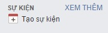
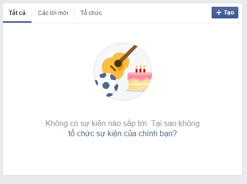
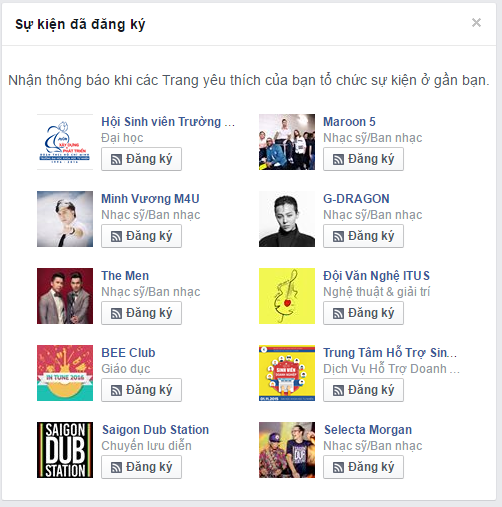
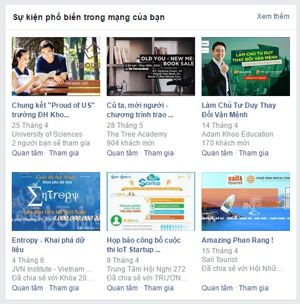
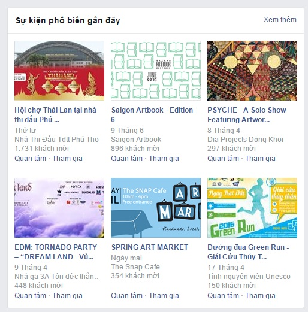

Vì sao cần cải tiến quy trình thông thường???
Trong các bước của quy trình nêu trên, bước 2 có nhiều vấn đề bất cập. Với những người dùng facebook thông thường, những trang facebook chưa được điều chỉnh sẽ cập nhật thông tin không hiệu quả,
nhiều thông tin rác không cần thiết, những tin chính sẽ bị trôi khá nhanh. Kênh thông tin bạn bè khó có khả năng cập nhật kịp thời trong một số tình huống. Chúng tôi đề nghị cải tiến quy trình ở bước 2 bằng một quy trình cấu hình facebook để thông tin hiển thị được chính xác hơn.

QUY TRÌNH CẢI TIẾN
Bước 1:
Truy cập vào trang quản lý sự kiện trên Facebook của bạn

Sau khi truy cập bạn sẽ quản lý được các sự kiện đang tổ chức được đưa tin lên facebook. Đây là một bảng sự kiện chưa được cấu hình.

Bước 2:
Hãy đăng kí theo dõi các fanpage yêu thích của bạn để cập nhật các sự kiện do họ tổ chức

Bước 3:
Lúc này bạn đã đăng kí theo dõi các trang yêu thích. Hãy xem xét các sự kiện thú vị đang diễn ra nhé.


Tham khảo thêm quy trình cấu hình bảng tin để hiển thị thông tin tốt hơn:
QUY TRÌNH CẢI TIẾN